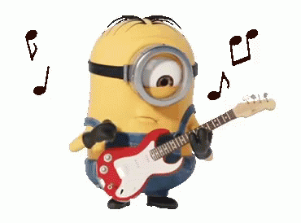
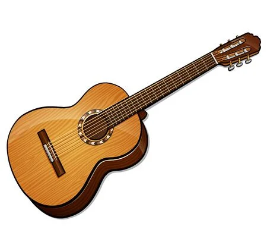

Una de las muchas cosas de la música una de las más son los artistas que hacen que la música
siga evolucionando y que a todos los que la oyen les encante y así puedan prosperar
Motivación
Yo escogí este tema porque la música es algo que me gusta mucho y hace que toda la gente se
pueda expresar de una manera que con palabras no se puede
Volumen de musica
Top 10 cantantes actuales
25/11/2021
Post Malone
Dua Lipa
Trans-Siberian Orchestra
Billie Eilish
The Lumineers
Lil Uzi Vert
The Weeknd
Elton John
Justin Bieber
Bad Bunny
Este es un top 10 de los cantantes o grupos más conocidos actualmente en México.
Aquí hay unos links que los llevarán a unas páginas confiables con noticias sobre la Musica y
los artistas, de cada uno de los géneros.

Minion
Referencias de nfl
16/12/2021
Aquí les dejo un video de jovenes muy talentosos cantando
 Investigación
21/01/2022
Los cantantes y sus voces.
En la historia de la música ha habido muchos géneros, cantantes, tonos de voz y más pero lo
que más los diferencia es que los que se volvieron muy famosos es porque tenían una voz
increíble sin efecto, actualmente hay muchas cantantes que usan auto Tune para que su
canción se escuche mejor pero los cantantes antiguos no tenían esta herramienta por lo que
usaban su voz natural para cantar y de todas maneras impresionaban a mucha gente con lo bien
que cantaban y con los tonos que podían alcanzar, el auto Tune es una herramienta usada para
que la voz se escuche mejor pero hay cantantes que se aprovechan demasiado de eso y cuando
las gente los escucha cantar sin Auto tune se decepcionan de ellos ya que sin el auto Tune
no son tan buenos como pensaban.
En la música y más precisamente en el coro existen varias tonalidades de voz que los
cantantes pueden llegar a utilizar y se dividen en voces de coro femenina y las voces de
coro masculinas, entre cada una de estas hay varios tipos, en las voces de coro femeninas
existen tres: soprano, mezzosoprano y contralto y en las voces de coros masculinas existen
cuatro: contratenor, tenor, barítono y bajo, en las voces femeninas el contralto es una de
las voces más difíciles de conseguir por su tono tan grave actualmente sólo un 2% consigue
este tono y el barítono es el tipo de voz más común entre los hombres.
Los cantantes de ahora ya no necesitan cantar del todo bien, si son buenos componiendo
canciones les puede ir muy bien ya que ahí está el ejemplo de Bad Bunny que no es una
persona que cante excepcionalmente bien pero es uno de los cantantes más famosos actualmente
y también de los que más reproducciones tienen en Spotify también podría ligarse aquel
género que él canta es un género que no necesitas cantar bien y si cantas bien talvez no
escuche del todo bien ya que el punto del reggaetón es el ritmo y la letra, no que tan bien
cante el cantante.
El reggaetón se ha vuelto muy famoso en estos últimos años ya que los jóvenes lo usan para
salir a fiestas, reuniones con amigos o simplemente para aprendérselas y bailarlas en
algunas aplicaciones como Tik Tok o Instagram por lo que los cantantes de este género ganan
mucho dinero si se vuelven famosos y sacan muchas canciones que al público les guste ahí
está el caso de J Balvin y Bad Bunny que han tenido un desempeño muy bueno este año, este
año, el puertorriqueño Bad Bunny se adjudica el primer lugar este año con más de 8.300
millones de streams de fanáticos de todo el mundo.1
Aquí hay una estadistica de comparación entre que tanto superó Bad Bunny a J Balvin
Losinstrumentosde la música.
Uno de los instrumentos más famosos conocidos en la música es la guitarra, ya que se puede
usar para múltiples géneros, como por ejemplo las canciones en acústico que son canciones un
poco lentas que le dan el toque como si fuera clásico también existe la guitarra eléctrica
que se usa muchas veces para el género del rock que es completamente lo contrario a lo
normal ya que la guitarra es como tranquila y la guitarra eléctrica se usa para alcanzar
notas muy fuertes,que no muchos toleran ya que al ser tan fuertes se le debe de poner un
volumen alto por lo qué a muchas personas les pasa que les aturde los oídos y no les gusta
Un gran instrumento que muchos músicos usan es el piano Pero este instrumento no puede ser
tocado por cualquiera ya que requiere una habilidad de sincronización y coordinación con las
manos que muchos no pueden lograrlo y también tienen que estar leyendo las partituras para
saber cómo va la canción por lo que es muy difícil tocarlo,además hay algunos que logran
cantar al mismo tiempo y eso ya es algo de admirar, es un instrumento musical armónico
clasificado como instrumento de cuerda percutida por el sistema de clasificación
tradicional, y según la clasificación de Hornbostel-Sachs es un cordófono simple. El
músico que toca el piano se llama pianista.2
Un instrumento muy clásico sobre todo en los mariachis en México, es la trompeta ya que la
trompeta tiene una potencia y una tonalidad que llega a sobresalir por encima de muchos
instrumentos, todo su cuerpo está formado por metal y el sonido que hace es por vibración de
aire que producen los labios cuando la gente básicamente sopla y esos labios se colocan en
la boquilla de la trompeta, lo cual es fascinante ya que simplemente con unos tubos de metal
puede llegar a ser un instrumento con una potencia y tonalidad increíblemente alta que te
sirve para muchos tipos de canciones
El violín para términos un poco sencillos es parecido a una guitarra pero mucho más chiquita
y por lo general no se toca directamente a las cuerdas sino que se usa El arco para poder
tocarlo este arco también se ocupa en los Violonchelos la viola o el contrabajo el violín es
un instrumento de cuerda frotada que cuenta con cuatro cuerdas afinadas por intervalos de
quintas perfectas, este instrumento tiene una gran flexibilidad en su rango total ya que es
muy dinámico para usarse en diferentes canciones de distintos tonos como alegres tristes o
también suspenso, incluso podría usarse en películas de acción como piratas del Caribe.
La música de ahora
A cada persona del mundo le gusta un género diferente de música por ejemplo el rock el pop la
música ranchera los corridos tumbados etc. pero hay alguna parte por ejemplo en México que
le gustan mucho las canciones en inglés que se escuchen con un tono un tanto romántico como
por ejemplo las canciones que canta Shawn Mendes o también Harry Styles estos dos cantantes
son muy famosos por cantar unas canciones que son con un tono muy suave y romántico ya que
así a muchas personas les va a parecer muy bueno y podrían usarlo para música de relajación
y por lo general este tipo de música les gusta sobre todo a las mujeres
Shawn Mendes es uno de los cantantes más escuchados y más codiciados por la gente sobre todo
actualmente por las mujeres, pero debido a que es muy famoso, muchas de sus canciones han
llegado a gustar a todo tipo de público y han aparecido en distintas ocasiones en películas,
como por ejemplo Sing 2 una película recientemente puesta en el cine que nos muestra la
canción de Shawn Mendes There’s nothing Holding me back, que se ha vuelto muy famosa por
distintos medios como por ejemplo Tik Tok y algunas otras redes sociales, Shawn Mendes
There’s nothing Holding me back 1,056,736,064 views3
Ozuna es una uno de los cantantes más famosos pero lamentablemente bajó un poco su nivel de
canciones y por eso es que bajó su popularidad en 2021 pero de todas maneras sacó muy buenas
canciones, a pesar de no ser tan famosas como las pasadas tuvieron muchas vistas, como por
ejemplo la canción de emojis de corazones tuvo más de 33 millones de visitas por lo que eso
nos deja en claro que aunque no le vaya tan bien sigue teniendo millones de views lo único
extraño es que solo tiene 300 mil likes de 33 millones de view por lo que eso dice que no es
tan apoyada y que muchas de esas views son las mismas personas escuchándola varias veces.
Hay muchos tipos de género de música, pero como todo en la vida hay cosas que se escuchan o
se usan más que otras en este caso también en el primer lugar está la música de género Rap
conocida en algunos contextos como hip-hop se trata de un estilo musical desarrollado en
Estados Unidos, en segundo lugar está el K-pop, en tercer lugar está el rock, en cuarto
lugar está la música electrónica, en quinto lugar está el pop, en sexto lugar está
independiente, en séptimo lugar está la música clásica y en octavo lugar está el Country,
claramente hay muchas géneros más pero estos son algunos de los más famosos.
 Musica
Musica 

 Referencias de nfl
Referencias de nfl